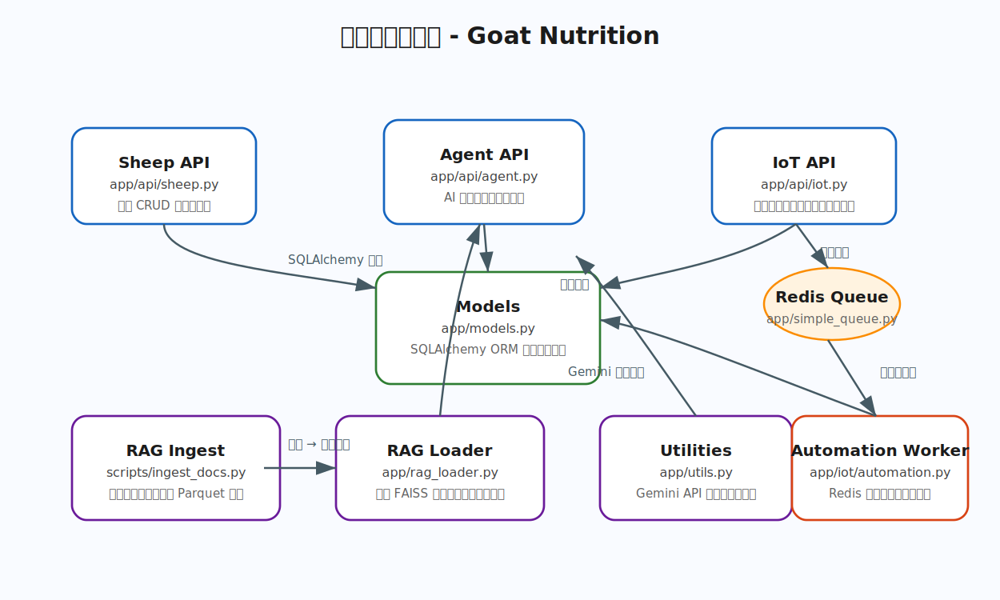
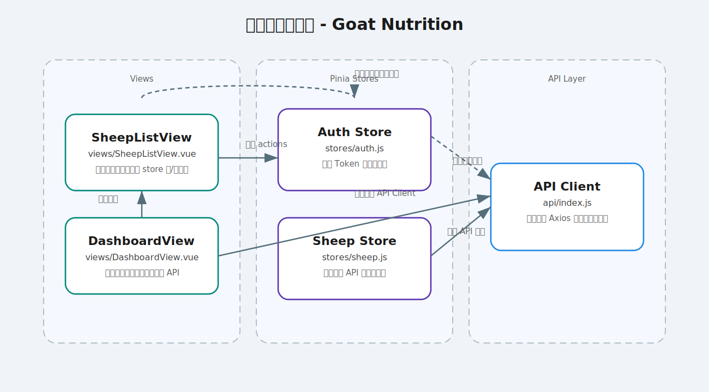
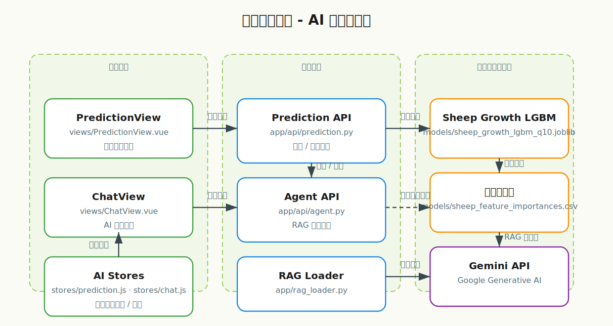

360° 羊群生命週期管理
整合耳號、健康紀錄、事件記錄、成長指標與族群分析，串聯生產、繁殖、醫療到出貨格式，提供全程追蹤與回溯能力。
整合 AI 預測、IoT 感測、營養建議、可視化儀表板與企業級追溯機制，將羊群的健康與營運效率推升至新高度。此 Showcase 彙整專案關鍵價值、核心模組、技術架構與產品藍圖，協助團隊與利害關係人快速理解產品亮點。
領頭羊博士以「資料驅動的畜牧決策」為核心，針對中大型羊場的營運痛點提供完整解方：從羊隻個體管理到批次分析，從即時感測到 AI 智能建議，再到營養、財務與追溯合規，打造具備跨域洞察力的智慧養殖平台。
整合耳號、健康紀錄、事件記錄、成長指標與族群分析，串聯生產、繁殖、醫療到出貨格式，提供全程追蹤與回溯能力。
導入 LGBM 成長模型、個體／群體營養評估與文獻型 RAG 查詢，引擎自動產出飼料配方建議和乾物質攝入預測。
透過感測器蒐集體重、體溫、活動量，並可下達自動化控制命令，形成環境控制與健康警報的閉環。
即時儀表板顯示存欄、健康、營收、成本與效益，整合收支與批次帳本，支持投資報酬分析與策略模擬。
前台 Vue3 + Element Plus 提供操作體驗，後台 Flask 驅動 API 與任務排程，多個子系統共同支援牧場的日常營運。
採用 Aurora 風格介面、虛擬化表格、Sheet Mapping Configurator 與多種圖形分析組件，支援深色／亮色主題與快速鍵操作。
模組化設計涵蓋 activity、agent、auth、BI、finance、IoT、prediction 等 API，結合 Redis cache、任務佇列與 Session 中介層。
結合嵌入式檢索與 GenAI 模型，提供營養諮詢、事件建議、報表摘要，並具備 verifiable log 追蹤問答歷程。
提供羊隻歷史資料、研究文獻 RAG 資料庫與向量化語料集，支援 AI 模型訓練與快速查詢。
Docker Compose 實作前後端、背景工作者、PostgreSQL、Redis 與向量索引服務。支援 GitHub Actions / Codespaces 快速啟動，並可延伸至 Kubernetes。
採用 Domain-Oriented 模組切分：Analytics、IoT、Sheep、Traceability、Settings。利用 Pinia store 統一狀態，並導入 Vitest + Playwright 測試矩陣。
透過 `backend/app/ai` 與 `backend/app/api/agent.py` 模組串聯 AI 推理服務。採用向量檢索搭配大型語言模型，使牧場人員即可對羊場營運提出自然語言問題，獲得具體建議。
LGBM Quantile 模型提供不同情境下的體重成長預測；AI 模組將結果轉換為飼料攝入建議與健康提醒。
收錄 40+ 篇專業文獻（`docs/rag_sources/`），經 Parquet 向量化後可即時檢索引用，確保建議具備學理依據。
為每次 AI 交互建立可驗證日誌，結合 `verifiable_log_service.py` 確保決策透明、可稽核。
前端 ChatView 與 AnalyticsHub 支援自然語言輸入，將使用者需求轉換為報表、圖表與匯出檔案。
`iot_simulator/iot_simulator.py` 提供完整模擬器，可產生體重、溫度、活動量資料並串流至後端或 MQTT Broker。
以 `backend/app/api/iot.py` 結合規則引擎與排程器，支援控制飲水、飼料輸送、環境調控等自動命令。
DashboardView 提供即時告警、風險評估、對策建議；Tracing 模組串連事件、批次、個體，支援跨時間回顧。
BI API 與前端 Analytics 模組提供多層級視角，協助管理層掌握 KPI、群體效益與成本結構。
AnalyticsHub 結合 Cohort、Cost-Benefit、Finance Entry 等元件，使用者可客製化欄位、條件，並匯出 CSV / PDF 報告。
`SheetMappingConfigurator` 與 AI Mapping 讓使用者可以匯入不同來源的 Excel 格式，透過 AI 建議自動對應欄位，大幅縮短資料清理時間。
完成羊群管理、AI 成長預測、IoT 感測、儀表板、資料匯入等核心功能，建立智慧牧場基礎。
導入多牧場中央控台、聯邦學習、跨場景報表、支付與銷售整合，打造區域性牧場聯盟。
引入自動餵料策略、碳排監控、水資源管理、生產履歷區塊鏈串接，因應 ESG 與國際貿易追溯要求。